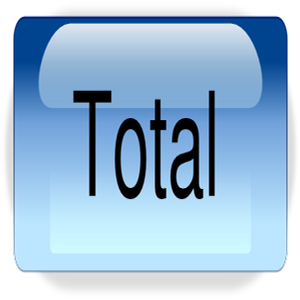
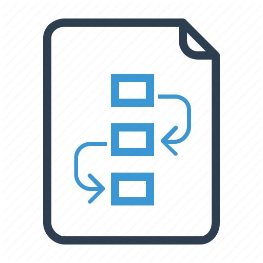

Features

Set Project Co-Ordinator Rule for User
You can set project co-ordinator rule for user that shows only his projects and sub-projects.
Easy to Create Sub Projects from Parent Project
You can easily create sub projects from parent project in 'Sub Projects' tab.Easily Divide Projects and Sub Projects
You can easily divide project and sub projects with its details.Display Warning on Deletion of Project and Sub Project
When you delete project which has sub projects and delete sub project which has tasks it will display warning.Start and Stop Task Timer
User can easily use start task and end task timer of the task.
Auto Count Duration of the Task
User can see total duration of task based on start date/time and end date/time on task form and kanban view.
Start Multiple Tasks at the Same Time
User can easily start and stop multiple tasks at the same time.Fill Task Timesheet based on Timer
User can fill the timesheet on the basis of timer and give description using wizard.Auto Send Email for Daily Task Update
User can see daily task update email of all tasks created by them and assigned to them.Auto Send Email for Weekly Task Update
User can see weekly task update email of all tasks created by them and assigned to them.Manage Project Documents
User can see all attached documents on project and download from there.Manage Task Documents
User can see all attached documents on task and download from there.Easy Access to All Documents
View and access all attached documents of project and task in tree, form, and kanban view.
Document Resource Model and Name
User can view resource model and resource name for all attached documents.
Set High or Moderate Priority for Project & Task
User can set and change priorities to high or moderate for project and project tasks.
Set Low or Normal Priority for Project & Task
User can set and change priorities to low or normal for project and project tasks.
Send Project Task By Email
User can share any project task by email from any task state.
Add Or Remove Recipients to Task Email
User can send email to customer and can add more recipients to task email.
Send Task With Attachments
User can send project task by email with all uploaded attachments and can add more attachments to mail.Change Email Template and Subject for Task Email
Before sending task as mail user can change email subject, content and email template for that.Mass Update Tasks with Projects and Stages
User can update multiple tasks with projects and stages.
Mass Update Tasks with Assignees
User can update multiple tasks assignees via add and replace option.Mass Update Tasks with Deadlines
User can update multiple tasks with deadlines.
Mass Update Tasks with Tags
User can update multiple tasks tags via add and replace option.
Mass Update Project Stages
User can update multiple project stages at once.
Select Project Update Method
User can select update method like add or replace for project and all selected project stage will updated.Assigned Multi Users for Single Task
User can assigned or allowed multi users for single task.Task Visible to Assigned Users
Assigned users can easily visible single task.Print Project Details PDF Report
User can print project details in PDF report.Print Task Details PDF Report
User can print task details in PDF report.Configure Task Delay Start Notification
User can tick on 'Delay Task Start Notification' checkbox then inside set delay day(s).
Configure Task Delay Completion Notification
User can tick on 'Delay Task Deadline/Overdue Notification' checkbox then inside set delay deadline day(s).Send Email for Delay Task Start Notification
Email notification sent to users whose tasks not started.
Send Email for Delay Task Completion Notification
Email notification sent to users whose tasks not completed.Subtask List For Every Task
It allow to create subtask for current project.Track All The Task
Track all subtask with different stage label like TODO,CANCLE and DONE.
Email Notifications In Task Mail Thread
User can get instant email notifications, which can be seen in task.Configuration For Subtask Stages
User cannot can check and change the stage for the subtask.
Don't Show Due Deadline Task Red and Deadline.
On configured state user can not see due deadline task in red color and deadline on kanban view.
Due Deadline Task Filter.
User can easily filter due deadline task with filter.
Schedule Task Based on Deadline
User can schedule task based on task deadline.View Task Schedule Time
On task tree, form and kanban view user can see task schedule time, like, today, tomorrow.Set Task Done Button.
User can set task as done with single click.
Group By Task Based on Deadline
On task kanaban view user can see task group by based on task deadline.Set Default Stages for Projects.
User can set default stages for projects.
Share Same Stages on Multiple Projects.
User can share same stages for multiple projects.
Create Meeting from Task
Create meeting from task by select date in wizard.Navigate Meeting/Task
Navigate Task to meeting and meeting to task.

Count Created Meeting
Count created meeting in task form.
Created Meeting List
Display created meeting list from task.
Change Assigned User Regarding Stage.
Automatically assign task to user when change stage on kanban view.
User Can Set Default Stage/User.
Configured user and stage automatically assign when create a new project.Create Unique Project/Task Sequence Number
Automatically create unique project and task sequence number.Create Unique Project/Task Sequence Number with Prefix
Automatically create unique project and task sequence number with related project prefix.Easy create a deadline reminder
Creates a reminder for user automatically.Sends reminder about multiple tasks.
Sends Details about every task.Deadline reminder through email
Creates a deadline reminder mail and sent automatically to employees.
Sends details about reminder on selected interval
User can send two reminders, which can be decided by user.Automatically Send Mail
Automatically check initial hours and total spend hours, then send mail.Initial Hours
Compare initial hours with total spend hours.Automatically Receive Mail
User can automatically receive mail about task hour reminder.
Total Spend Hours
If total spend hours is greater than initial hours, then send mail.Quick Create Task from Order
User can easily and quick to create task from sale order.
Pop-up for Adding Task Details
Special pop-up for adding task details in sale order.
Tags History on Task Chatter.
On adding/updating task tags user can see and track history for tags on task chatter.
Easy to Track Tags Update.
It helps user to keep track of adding/updation task tags.
Import Task
Import task data from from CSV/XLS file.Warning on wrong or unvailable data
On importing the data which is not availabe or wrong warning will be shown.
Create Project Checklist
User can create project checklist with its description.Create Project Checklist Template
User can create project checklist template and also select project checklist template for project.

Set Project Checklist State
Project checklist has New, Complate and Cancel state for that Click on check icon to complete checklist and cancel icon to cancel checklist.